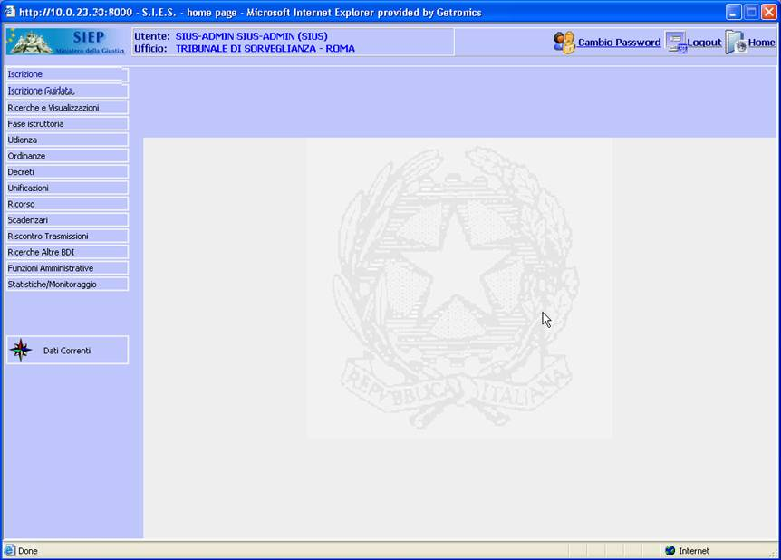
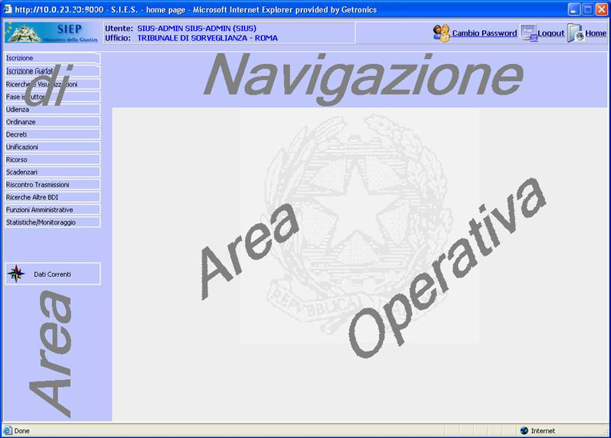

GENERALITA'
PAGINA INIZIALE: Dopo che l'utente ha effettuato il Login l'applicazione presenta la pagina iniziale composta da:
| l'area di navigazione nel quale sono presenti i pulsanti ed i bottoni tramite cui l'utente può svolgere le funzioni desiderate; | |
| l'area operativa nel quale verranno visualizzate le funzioni prescelte dall'utente nell'area di navigazione. |
LE MASCHERE VIDEO
La pagina iniziale si presenta con la seguente videata:

In essa possiamo individuare l'area di navigazione e l'area operativa:

COME FARE PER ...
Per una dettagliata esposizione sull'operatività si rimanda a quanto esposte nelle pagine area di navigazione e area operativa.
Sono presenti tre "help on line" differenti, ciascuno utilizzabile nella sezione applicativa relativa ed in particolare:
|
Help relativo al modulo applicativo per la gestione dell'Esecuzione Penale; | |
|
Help relativo al modulo applicativo per la gestione del Tribunale ed Ufficio di Sorveglianza; | |
|
Help relativo al modulo applicativo per la gestione dell'Amministrazione. |
Di seguito sono elencate una serie di indicazioni utili per facilitare l'utilizzo dell'help all'interno delle varie applicazioni:
|
Per visualizzare la pagina contestuale dell'help sulle varie maschere dell' applicazione:
| |||||
|
Per visualizzare l'indice delle pagine di Help relativamente ad un determinato argomento
| |||||
|
Per tornare alla pagina precedente dell'help:
|